Opportunity Scoring
Opportunity Matrix
Plots all Bay Area zip codes on two axes: distress score (motivated sellers) vs. market attractiveness (strong fundamentals). The target zone — upper right quadrant — identifies zip codes like 94117, 94129, and 94115 where operators show financial stress in structurally sound submarkets. These are the highest-priority acquisition targets.
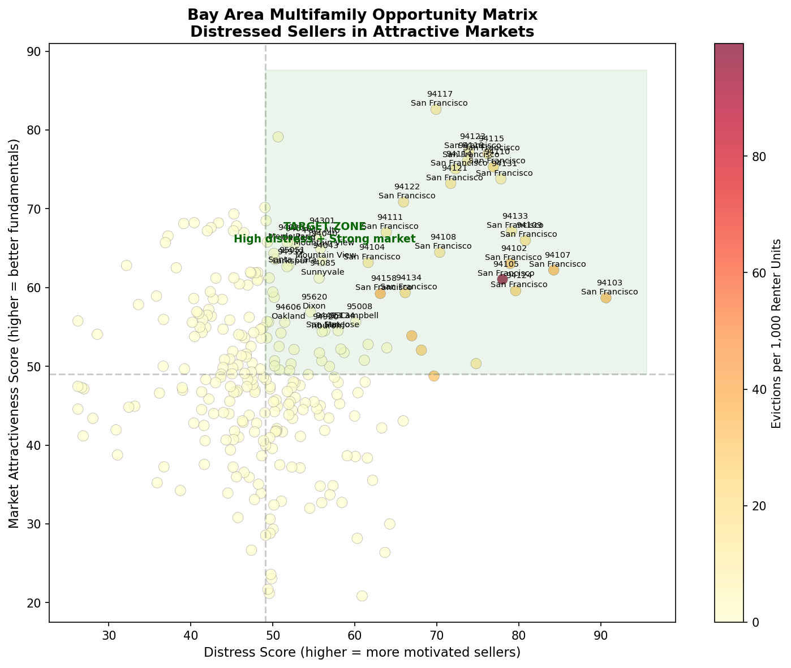
Factor Analysis
Factor Heatmap — Top 10 Submarkets
Breaks down each top zip code across all 8 scoring factors. 94117 (Haight-Ashbury) leads across renter %, low vacancy, and price momentum. Red cells indicate weak scores — useful for spotting single-factor risk. 94129 scores near-uniformly green, suggesting broad-based strength with limited downside.
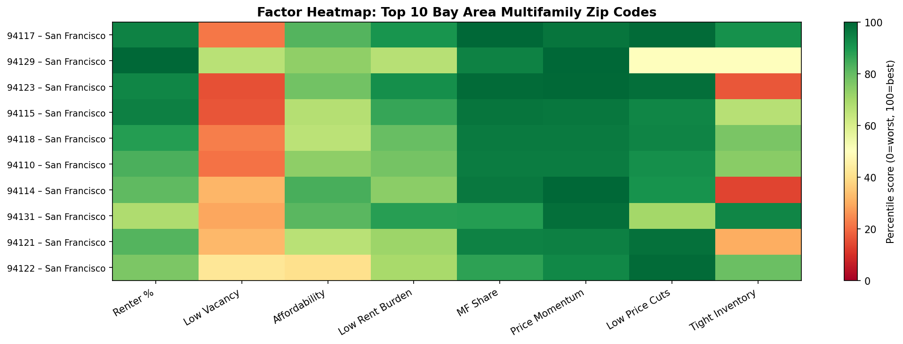
Price Trends
County Price History
Bay Area home values peaked in early 2022 across all counties and corrected sharply through 2023. San Francisco and San Mateo took the deepest correction but have begun recovering. Santa Clara and Marin held value better. The 2024–2026 stabilization sets up a potential entry window before the next appreciation cycle.
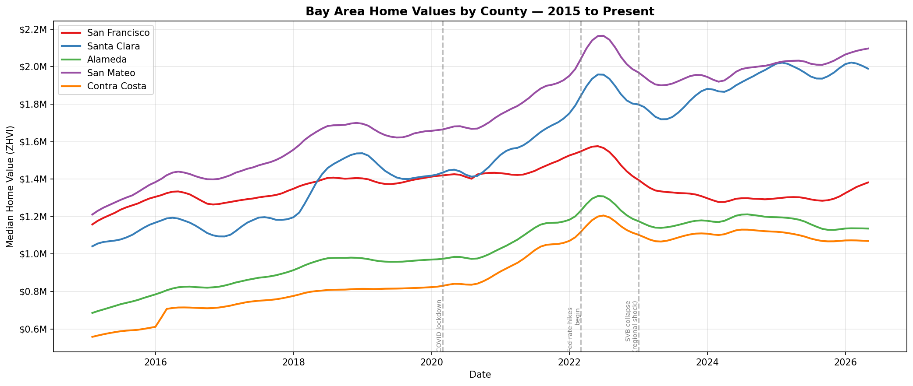
Price Forecasting
12-Month Price Forecasts
SARIMA time series models forecast SF County up +6.5% over the next 12 months — the most bullish county in the region. Santa Clara is projected flat to slightly negative (-1.0%), and Alameda slightly negative (-1.2%), reflecting softer tech-sector demand. SF's recovery trajectory is the strongest signal for near-term multifamily appreciation.
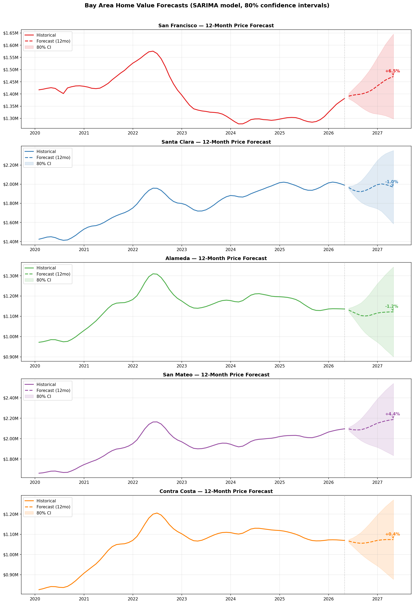
Distress Signals
Evictions by Neighborhood
Tenderloin and Financial District/South Beach show the highest eviction activity — a mix of operator distress (non-payment) and owner exits (Ellis Act, OMI). Mission and Nob Hill follow closely. High eviction density signals cash-strapped operators likely to sell at a discount, especially when paired with above-average vacancy or deferred maintenance.
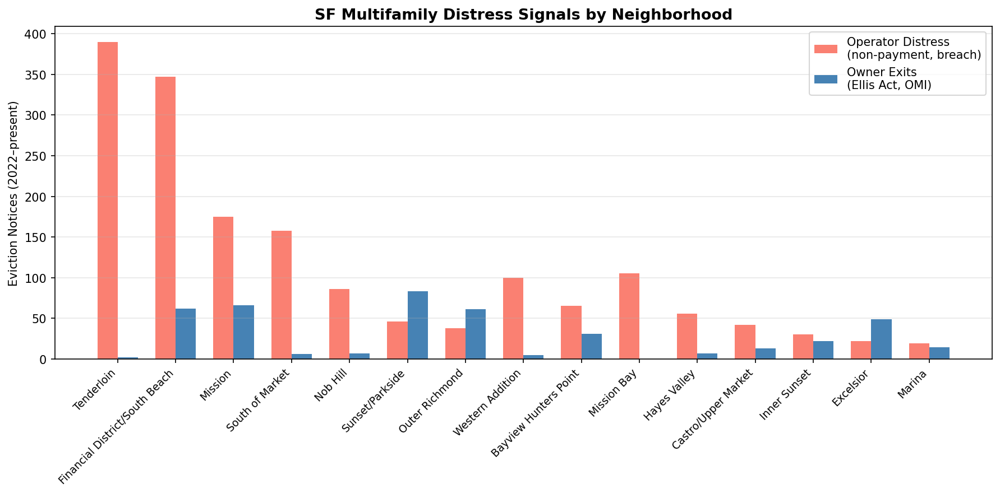
Distress Signals
Evictions Overview
Citywide eviction filings surged post-COVID moratorium, peaking in 2024–2025. Nuisance and non-payment dominate current filings, indicating operator stress rather than strategic repositioning. The breakdown by reason helps distinguish motivated sellers (financial distress) from owners simply reclaiming units — a key underwriting distinction.
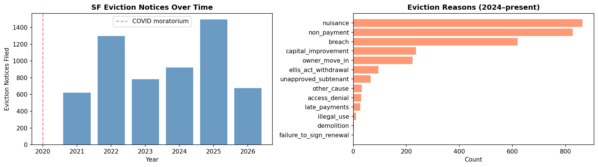
Regulatory Risk
Ellis Act Withdrawals
Ellis Act filings — where owners remove units from the rental market entirely — spiked in 2022–2024 before declining in 2025–2026. Sunset/Parkside and Mission lead by neighborhood. High Ellis Act activity signals owners exiting the landlord business, creating acquisition opportunities at below-replacement cost in rent-controlled submarkets.
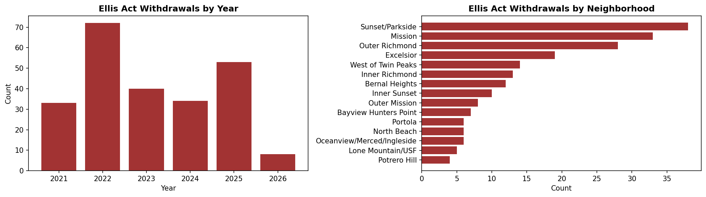
Supply Analysis
Permits Over Time
Post-COVID permit activity recovered sharply, but new construction permits remain constrained relative to demand. Low permitting in core SF neighborhoods limits new supply, supporting rent growth and valuations in existing stock. Capital-constrained operators deferring maintenance in low-permit areas are particularly attractive acquisition targets.
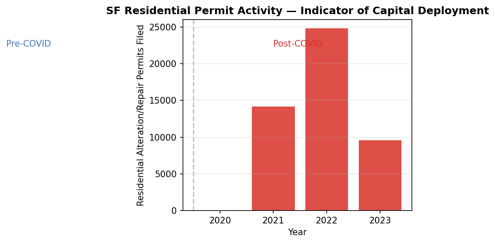
Market Health
Redfin Market Health
Four Redfin indicators tracked across SF, San Jose, and Oakland since 2020. SF's days on market have compressed and sale-to-list ratios have recovered above 1.0, signaling renewed buyer competition. Months of supply remain low across all three markets. These transaction-level signals confirm that the price forecast recovery has real demand backing it.
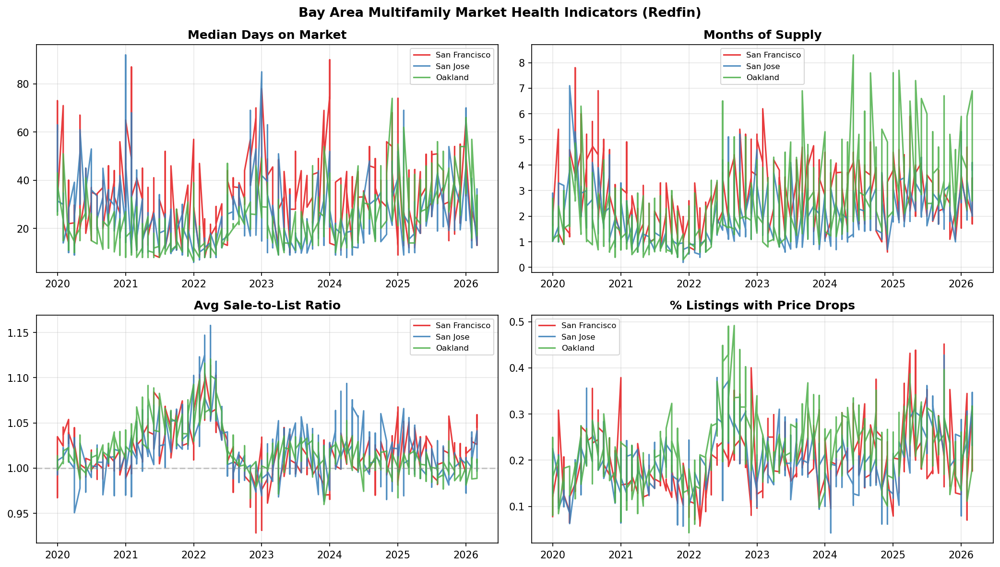
Market Overview
County Summary
San Francisco County leads all Bay Area counties on composite investment score, driven by high renter concentration, tight vacancy, and strong price momentum. The renter demand vs. price momentum scatter confirms SF as an outlier — high renter % household base with recovering prices. Marin and San Mateo score well on fundamentals but offer fewer distressed entry points.
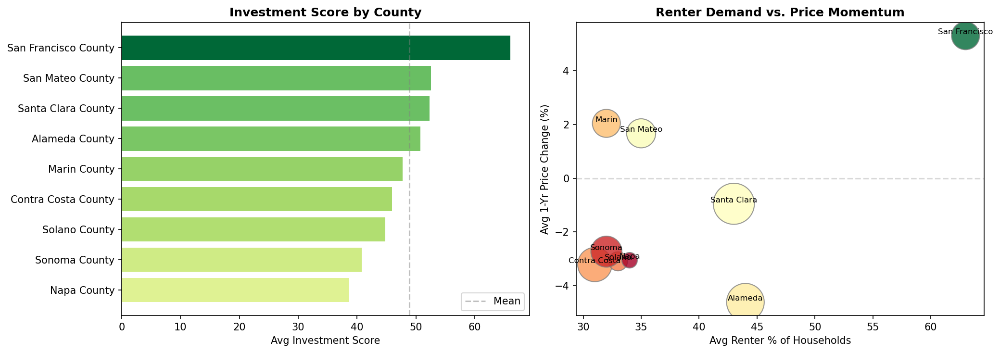
Trend Decomposition
SF Price Decomposition
Decomposes the SF ZHVI time series into its underlying components. The trend component (orange) shows the structural appreciation trajectory — a clear peak in 2022 and gradual recovery. The seasonal component (green) captures the consistent spring/summer price premium. Residual noise (pink) spiked around 2022's rate shock but has since normalized, suggesting the current trend signal is cleaner and more reliable for forecasting.
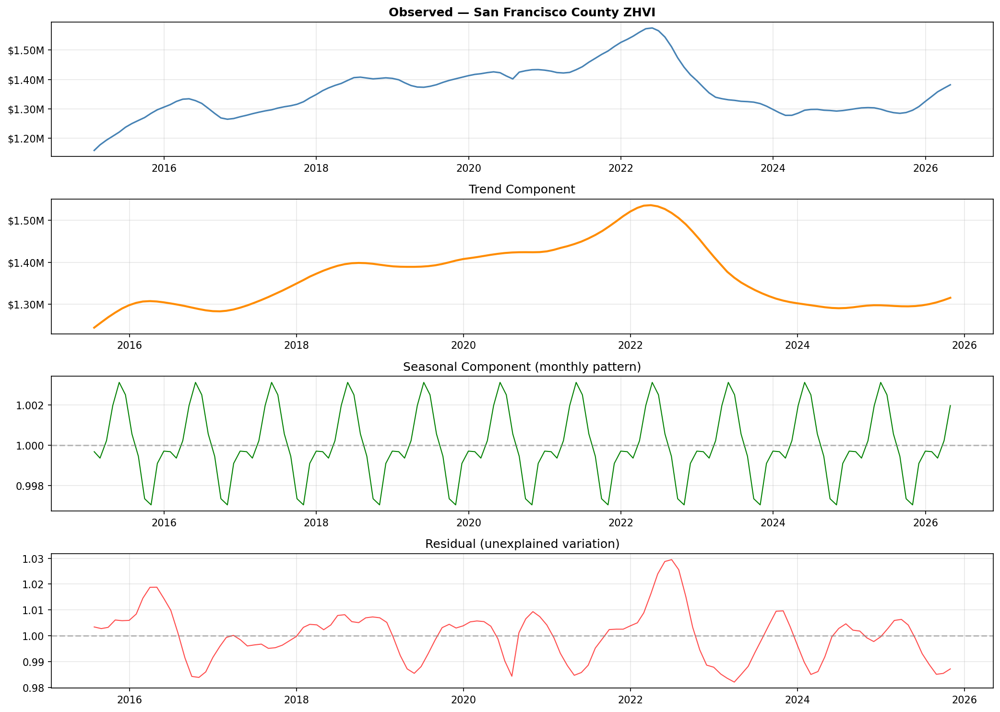